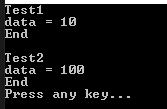
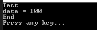
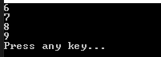

こんにちは。明月です。
この投稿は匿名形式(Anonymous Types)を使い方に関する説明です。
クラスはC#でプログラムを作成するところで最小単位です。
クラスの基本構造はメンバー変数と関数があり、その以外にプロパティ、デリゲート、イベント、インデクスがあります。
link - [C#] 10. クラスを作成する方法(コンストラクタ、デストラクタ)
そして我々が作成したクラスをメモリにインスタンス生成するためにnewというキーワードを使って生成することになります。
using System;
namespace Example
{
// 例クラス
class Node
{
// メンバー変数プロパティ
public int Data
{
get; set;
}
// 出力関数
public void Print()
{
// コンソール出力
Console.WriteLine(Data);
}
}
class Program
{
// 実行関数
static void Main(string[] args)
{
// インスタンス生成
var node = new Node();
// インスタンスメンバー変数に値を格納
node.Data = 100;
// 出力関数呼び出す。
node.Print();
// 任意のキーを押してください
Console.WriteLine("Press any key...");
Console.ReadLine();
}
}
}
クラスで一番重要なことはメンバー変数です。
プロパティはメンバー変数に値を格納するための関数だし、デリゲートやイベント、インデクサーなども関数の役割について区分するための関数です。
関数というのはプログラムを実装するための実行処理だけで、クラスのデータを格納するしクラスのサイズを決定するのは結局メンバー変数です。
でも、その使い目的によりクラスをすべて作成することにはソースがすごく複雑になる可能性もあります。
簡単の例として、単一目的によりデータを渡すためのクラスならそれをためクラスを作成することは無駄なこともあります。改めて説明すると、データを関数のパラメータにより渡す時、原始データだけでパラメータを作成するとパラメータが多くなりますが、パラメータのクラスを作成して渡すとソースが簡単になります。
using System;
namespace Example
{
// Print関数のパラメータ用のクラス
class Parameter
{
// プロパティ
public string Header { get; set; }
// プロパティ
public string Commnet { get; set; }
// プロパティ
public int Data { get; set; }
// プロパティ
public String Footer { get; set; }
}
class Program
{
// 出力関数、ただ原始データでパラメータを受け取る。
static void Print(string header, string comment, int data, string footer)
{
// コンソール出力
Console.WriteLine(header);
Console.WriteLine(comment + " = " + data);
Console.WriteLine(footer);
}
// 出力関数、クラスでパラメータを受け取る。
static void Print(Parameter param)
{
// コンソール出力
Console.WriteLine(param.Header);
Console.WriteLine(param.Commnet + " = " + param.Data);
Console.WriteLine(param.Footer);
}
// 実行関数
static void Main(string[] args)
{
// 出力関数を呼び出す。
Print("Test1", "data", 10, "End");
// 改行
Console.WriteLine();
// 出力関数呼び出す。
Print(new Parameter()
{
Header = "Test2",
Commnet = "data",
Data = 100,
Footer = "End"
});
// 任意のキーを押してください
Console.WriteLine("Press any key...");
Console.ReadLine();
}
}
}

上の例をみれば、始めの関数の場合はパラメータをただ原始データタイプで受け取ります。簡単な例なのでパラメータが4個ですが、仕様によりこのパラメータが10個、20個になる可能性もあります。
実際にそのように作成するとパラメータが多すぎて可読性が悪くなります。
なので、普通はパラメータのデータのクラスを作成して、クラスからパラメータのデータを受け取りますが、利点はソースが読みやすくなります。
でも、この問題は大きいプロジェクトだと思えば各関数のためパラメータのクラスを作成することはソースコードがすごく多くなります。
それでこのように一回性のインスタンスのための匿名形式のクラスがあります。
using System;
namespace Example
{
class Program
{
// パラメータはvarタイプで受け取られないので、dynamicタイプで受け取る。
static void Print(dynamic param)
{
// コンソール出力
Console.WriteLine(param.Header);
Console.WriteLine(param.Commnet + " = " + param.Data);
Console.WriteLine(param.Footer);
}
// 実行関数
static void Main(string[] args)
{
// newキーワードを使ってインスタンスを生成するが、クラス名はない。
var data = new
{
Header = "Test",
Commnet = "data",
Data = 100,
Footer = "End"
};
// 出力関数を呼び出す
Print(data);
// 任意のキーを押してください
Console.WriteLine("Press any key...");
Console.ReadLine();
}
}
}

上の例でPrint関数のパラメータによりデータインスタンスを渡すために、newキーワードを使ってインスタンスを生成しましたが、クラス名はありません。
インスタンスの変数タイプはvarタイプで設定して、Print関数からはvarタイプの変数名を使えないので、dynamicキーワードでパラメータを受け取りました。
以前のvarタイプとdynamicタイプに関して説明したことがあるので、参考してください。
link - [C#] 27. varキーワードとdynamicキーワード
特にこの匿名形式(Anonymous Types)のクラスタイプはLinq式でよく使います。
using System;
using System.Collections.Generic;
using System.Linq;
namespace Example
{
class Program
{
// 実行関数
static void Main(string[] args)
{
// リスト生成
var list = new List<int>();
// iが0から9まで
for (int i = 0; i < 10; i++)
{
// リストにデータを格納
list.Add(i);
}
// 6以上の値を匿名形式のListタイプでリターンする。
// 繰り返し、抽出
foreach (var node in list.Where(x => x > 5).Select(x => new { Data = x }))
{
// コンソール出力
Console.WriteLine(node.Data);
}
// 任意のキーを押してください
Console.WriteLine("Press any key...");
Console.ReadLine();
}
}
}

ここまで匿名形式(Anonymous Types)を使い方に関する説明でした。
ご不明なところや間違いところがあればコメントしてください。
- [C#] 40. Linqを利用した並列処理(Parallel)を使い方2020/05/13 17:37:13
- [C#] 39. lockキーワードとdeadlock(デッドロック)2019/07/24 00:57:35
- [C#] 38. ThreadPoolの使い方2019/07/23 00:05:40
- [C#] 37. スレッド(Thread)を使い方、Thread.Sleep関数を使い方2019/07/22 23:45:05
- [C#] 36. 拡張メソッドを使い方2019/07/22 23:30:17
- [C#] 35. 文字列クラス、StringとStringBuilderを使い方2019/07/22 23:15:42
- [C#] 34. 最上位クラス(Object クラス)2019/07/20 02:27:23
- [C#] 33. 匿名形式(Anonymous Types)を使い方2019/07/20 02:22:03
- [C#] 32. ジェネリックタイプ(Generic Type)を使い方2019/07/18 22:50:16
- [C#] 31. アトリビュート(Attribute)を使い方2019/07/18 20:22:16
- [C#] 30. Linq関数式を使う方法2019/07/17 23:06:42
- [C#] 29. Linqクエリ式を使い方2019/07/17 20:57:00
- [C#] 28. リスト(List)とディクショナリ(Dictionary)、そしてLinq式を使い方2019/07/16 22:40:03
- [C#] 27. varキーワードとdynamicキーワード2019/07/16 20:41:27
- [C#] 26. 例外処理(try ~ catch)する方法2019/07/16 00:59:34
- [CentOS] Linux環境(CentOS)でCassandra(NoSQL DB)をインストールする方法(DBeaverブラウザでNoSQL使い方)2021/11/12 17:33:58
- [Design pattern] 3-3. コマンドパターン(Command pattern)2021/11/05 17:01:42
- [Window] apache-tomcatでロードバランシング(Load balancing)する方法とセッションクラスタリング（セッション共有）2021/11/05 16:58:45
- [Window] Apacheでmod_jkとmod_proxyの差異、apacheでtomcatのwebsocketのプロキシフォーワードする方法2021/11/05 16:55:05
- [PHP] Apache環境の同じホスト中でPHPとJava(Servlet)を同時に起動、運用する方法2021/11/05 16:52:04
- [C#] 61. ウィンドウフォーム(Window form)でスレッド(Thread)を使い方、クロススレッド問題解決2021/11/04 19:29:51
- [Design pattern] 3-2. 責任の連鎖パターン(Chain of responsibility pattern)2021/11/04 19:27:58
- [Design pattern] 3-1. ストラテジーパターン(Strategy pattern)2021/11/03 18:38:52
- [C#] 60. ウィンドウフォーム(Window form)のイベント設定する方法2021/11/02 21:18:08
- [Design pattern] 2-7. ファサードパターン(Facade pattern)2021/11/02 19:32:31
- [Design pattern] 2-6. プロキシパターン(Proxy pattern)2021/11/01 19:42:44
- [Design pattern] 2-5. フライウェイトパターン(Flyweight pattern)2021/10/29 19:48:27
- [C#] 59. ウィンドウフォーム(Window form)にコントロール(Control)を使い方法2021/10/29 19:45:43
- [Design pattern] 2-4. デコレーターパターン(Decorator pattern)2021/10/28 20:11:13
- [C#] 58. ウィンドウフォーム(Window form)を作成する方法、そしてウィンドウメッセージとキュー2021/10/27 20:35:44